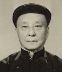

BuddhaSasana
Home Page
This document is written in Vietnamese, with Unicode
Times font
Cư sĩ Nguyễn
Văn Hiểu
(1896 - 1979)
|
 Cư sĩ Nguyễn Văn Hiểu sinh ngày 01/10/1896 tại làng Tân An, tổng Ðịnh Bảo, tỉnh Cần Thơ, con của ông Nguyễn Quang Diệu và bà Mai Thị Ðường. Từ nhỏ ông học chữ Nho, sau chuyển sang học chương trình Pháp-Việt trong 5 năm tại Cần Thơ. Năm 1911, ông thi đậu học bổng trường Trung học Mỹ Tho, sau đó lên Sài Gòn học trường Chasseloup Laubat, thi đậu bằng Thành Chung năm 1915. Rồi ông học trường Công Chánh Hà Nội và thi đậu bằng Cao học Kỹ thuật Công chánh Hà Nội năm 1918. Năm 1919 ông sang làm việc tại Campuchia, năm 1925 về làm Sở Hỏa Xa Sài Gòn, năm 1944 làm Giám Ðốc Hỏa Xa miền Nam. Lúc nhỏ, ông quy y theo phái Cao Ðài Tiên Thiên. Sau đó ông chuyển qua nghiên cứu Tin Lành và Gia Tô Giáo. Cuối năm 1930, nhân đọc quyển La Sagesse du Bouddha (Tuệ Giác của Phật) và hiểu được giá trị đích thực của đạo Phật, từ đó ông ôm ấp ý nguyện truyền bá giáo pháp Nguyên Thủy. Lúc đầu ông tập họp được các bạn đồng học gồm cư sĩ Cầm, Núi, Nhật, Hương cùng nhau thực hành thiền định. Năm 1935, khi gặp lại người bạn là Bác sĩ Thú Y Lê Văn Giảng, ông đem quyển kinh Phật bằng chữ Pháp giới thiệu và khuyên về Campuchia tầm sư học đạo. Sau đó người bạn ấy xuất gia, tức là Hòa thượng Hộ Tông, người sáng lập Phật giáo Nguyên thủy Việt Nam. Năm 1938, khi đi tìm đất cất chùa ở vùng ngoại ô Sài gòn và Chợ Lớn, ông gặp được ông Bùi Ngươn Hứa hiến phần đất ở Gò Dưa - Thủ Ðức để lập nên chùa Bửu Quang, ngôi chùa đầu tiên của Phật giáo Nam Tông Việt Nam. Năm 1939, ông đã thỉnh quý Ngài Hộ Tông, Ngài Thiện Luật, Ngài Huệ Nghiêm và một nhà sư người Campuchia về Việt Nam hoằng dương giáo pháp. Cũng trong năm 1939 này, ông đã thỉnh Ðức vua Sãi (Tăng vương - sangharaja) Campuchia Chuôn Nath và 30 vị Tỳ kheo Campuchia về làm Lễ Kiết Giới Sìmà tại chùa Bửu Quang. Năm 1940, ông bán nhà lấy nửa số tiền cất lại chùa Bửu Quang bằng ngói gạch và một cốc lầu gồm ba căn cũng bằng gạch ngói, ông dùng phân nửa số tiền còn lại để mua ruộng, lo chi phí ẩm thực cho chùa. Năm 1948, ông khởi công xây dựng chùa Kỳ Viên tại Bàn Cờ Sài Gòn và thỉnh chư Tăng đến thuyết pháp, trong đó có Pháp sư Thông Kham từ Lào đã được thỉnh về thuyết pháp tại chùa Kỳ Viên này. Ngài Naradà ở Tích Lan đã đến ngôi chùa này để mở đạo tràng giảng giáo lý. Ngày 14/5/1957 ông đứng ra thành lập Tổng Hội Phật Giáo Nguyên Thủy dành cho cư sĩ hoạt động. Ngày 18/12/1957 ông cùng với các Cao Tăng Nam Tông thành lập Giáo Hội Tăng Già Nguyên Thủy Việt Nam. Bên cạnh Phật sự quan trọng trên, ông còn lưu tâm trước thuật, phiên dịch một số kinh sách phục vụ công cuộc hoằng truyền Phật đạo, như sau:
Năm 1961, ông đứng ra vận động quyên góp tài chính để xây cất Thích Ca Phật Ðài (Vũng Tàu). Ngoài ra, ông đã tham dự Hội nghị kết tập Tam Tạng lần thứ 6 tại Miến Ðiện, tham dự Hội nghị Phật giáo Thế Giới tại Thái Lan và Ấn Ðộ năm 1964, và ông cũng đã sang Tích Lan và Singapore để thăm viếng các Hội Phật Giáo. Tuổi cao sức yếu và một số sở nguyện hộ pháp đã viên thành, cư sĩ về cõi Phật ngày mùng 2 tháng 5 năm 1979, tức ngày mùng 7 tháng 4 năm Kỷ Mùi, hưởng thọ 83 tuổi đời, hơn 40 năm là Cư sĩ hộ pháp. Là bậc tiên phong kỳ vĩ trong lịch sử cộng đồng cư sĩ Phật giáo Nguyên Thủy Việt Nam, cư sĩ Nguyễn Văn Hiểu đã để lại một sự nghiệp lớn lao là du nhập và phát triển Phật Giáo Nguyên Thủy tại Việt Nam. (Trích: Tiểu sử Danh tăng Việt Nam, Thích Ðồng Bổn chủ biên, 1996) -ooOoo- |
last updated: 16-03-2005